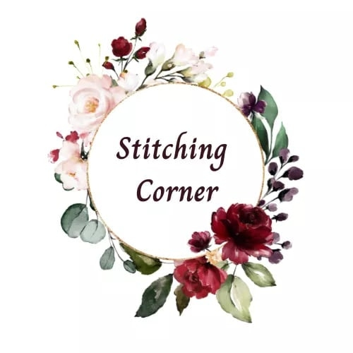

Welcome to Stitching Corner — your home for beautifully handcrafted embroidery and customized hoop art! We create unique, made-to-order gifts that capture your special memories through detailed stitching and thoughtful design.
Our products are available in three sizes — 10 inches, 12 inches, and 14 inches — priced at €75, €100, and €120 respectively. Each hoop is carefully designed using premium-quality linens, cotton fabrics, and colorful embroidery threads to ensure durability and beauty in every piece.
At Stitching Corner, we believe every gift should be as special as the person receiving it. That’s why we offer customized designs that can include your favorite photos, calendars, quotes, and patterns — all stitched to perfection according to your preferences.
Whether you’re celebrating an anniversary, birthday, or any meaningful occasion, our handmade hoops are designed to make your moments unforgettable. We also provide island-wide delivery, so your thoughtful gift can reach your loved ones no matter where they are.
Thank you for choosing Stitching Corner — where creativity and craftsmanship come together to make your day more meaningful.

Connect with us on Facebook for updates, new designs, and special offers!
Visit Our Facebook Page